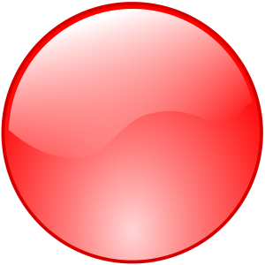
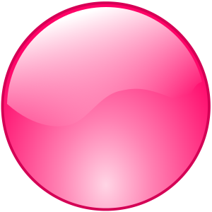
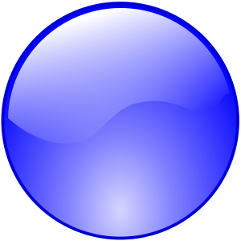
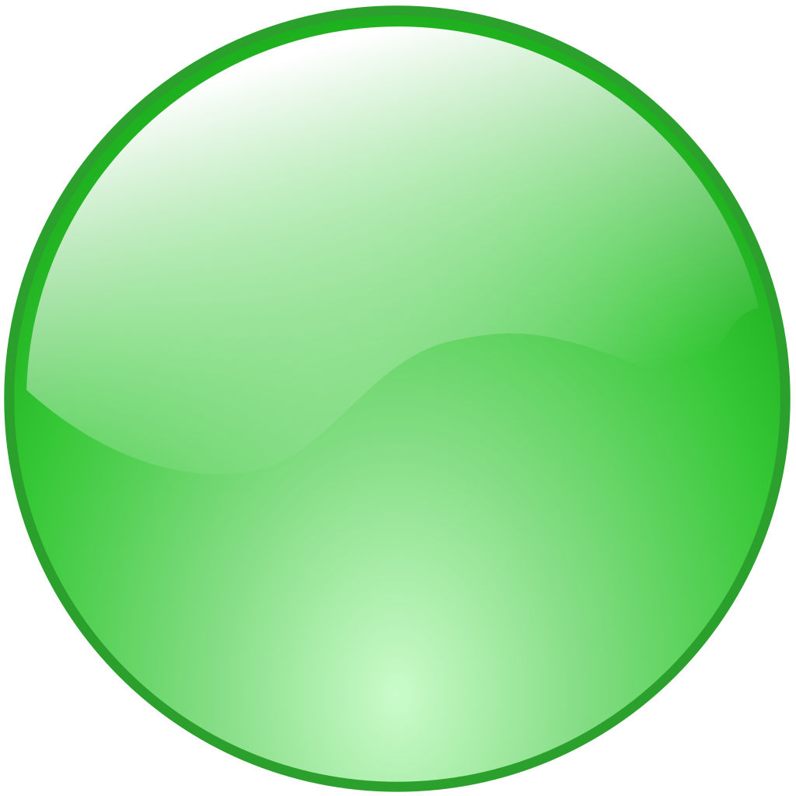

Sensory regulation in toddlers involves managing how they respond to sights, sounds, and other sensory inputs. As they develop, they may become overstimulated or under-responsive. Supporting their sensory regulation can involve using routines and sensory activities to help them stay calm and focused. These exercises will help in training the stability of the wrist and strengthening the muscles.

Red

Pink

Blue

Green
 Yellow
Yellow
Thin Brush
Medium thickness Brush
Thick Brush
Clear all